Click a highlighted definition to read it here without losing your place. Follow section numbers alongside the original PDF.
Chapter cheat sheet
The main idea: Let the shape of the data determine the shape of the OCaml program.
| Key term | Concise meaning |
|---|---|
| Pattern matching | Selects a case by a value’s constructor and binds its components. |
| let rec | Defines a function that can refer to itself recursively. |
| h :: t | Prepends one element h to list t; @ concatenates two lists. |
| Higher-order function | Takes a function as input or returns a function. |
| Fold | Replaces list constructors with a combining function and a base value. |
Rule to remember: fold_right f [a; b] z = f a (f b z); fold_left f z [a; b] = f (f z a) b.
Small example: List.fold_left (fun acc d -> 10 * acc + d) 0 [1; 2; 3] = 123.
How to solve problems:
- Write the input/output contract and empty case.
- Match the data constructors.
- Recurse on a smaller input and combine its answer.
- For an accumulator, state what it means; test order and boundaries.
Common trap: Fold direction changes parentheses and argument order. A tail-recursive helper needs an invariant, not just an extra parameter.
Read the chapter in the original PDF · Continue to the detailed sections
Syntax and code companion
Use the syntax reference to trace a symbol to its meaning and source. Related cheat sheets: Lecture 3 · Lecture 4.
Patterns and recursive cases · Lists, cons, and tuples · Functions and application
Line-by-line code · A recursive list function
Complete OCaml teaching example
let rec length xs =rec permits calls to length inside its body.
match xs withInspect the list constructor.
| [] -> 0No elements means length zero.
| _ :: tail ->Discard the unused head; bind the smaller tail.
1 + length tailCount the head and recurse. Pending addition makes this version non-tail-recursive.
Trace result: length [4;7;9] = 3; inferred type: 'a list -> int.
Before you begin
Read in the PDF: Chapter 2, pp. 33–96. Goal: use OCaml as a language for describing and processing program trees. Definitions: pattern matching, structural recursion, higher-order function.
2.1 OCaml Basics
OCaml programs compute with expressions. A binding let x = e1 in e2 evaluates e1, binds its result to x, and evaluates e2 in that scope. A later binding with the same name shadows the earlier one; it does not mutate it. This distinction becomes the central subject of Chapters 3 and 6.
Types describe which operations are appropriate. Integers and floating-point numbers have distinct operations. A tuple can combine components of different types; a list has one element type. A function type int -> int -> int describes a function returning another function, so add 3 can be passed around before its second argument is supplied.
let add x y = x + y
let add_three = add 3
let answer = add_three 4 (* 7 *)
type tree = Leaf | Node of int * tree * tree
let rec size = function
| Leaf -> 0
| Node (_, left, right) -> 1 + size left + size right
The datatype defines legal tree shapes. Pattern matching selects a constructor and names its components. In the Node case, left and right are structurally smaller trees, giving both a recursive program and the outline of its termination argument.

View Mermaid source
flowchart TD
accTitle: Read an OCaml expression through its type and data shape
accDescr: Determine what a value represents before choosing its operation or pattern.
A["What value does this expression produce?"] --> B{"Data shape"}
B -->|List| C["Match empty or head plus tail"]
B -->|Variant| D["Match its constructor and fields"]
B -->|Function| E["Read input and output types; apply an argument"]
C --> F["Every branch must return a compatible type"]
D --> F
E --> F
Read this carefully: :: adds one element to the front of a list; @ concatenates two lists. Thus 1 :: [2;3] is valid, while [1] :: [2;3] mixes a list element with integer elements. The corresponding valid concatenation is [1] @ [2;3].
Exceptions interrupt normal evaluation and can be handled with try ... with. References introduce mutable cells, but most of this chapter's exercises need only immutable values and recursion. See the OCaml workbench for the course environment and commands.
2.2 Recursive Functions
First write the input/output contract, then split by data constructors. In each recursive branch, identify what becomes smaller. Finally explain how the smaller answer becomes the current answer. Do not use recursion merely because the function calls itself; use it because the data has a recursive structure.
For list append, an empty left list contributes nothing. A nonempty left list contributes its head and recursively appends its tail. The right list does not need to shrink because recursion measures the left list's length.
let rec append xs ys = match xs with
| [] -> ys
| x :: rest -> x :: append rest ys
For reversal, the direct equation is reverse (x::xs) = reverse xs @ [x]. It is easy to justify, but repeated append makes it quadratic. A tail-recursive version carries a reversed prefix in an accumulator:
let reverse xs =
let rec loop acc = function
| [] -> acc
| x :: rest -> loop (x :: acc) rest
in loop [] xs
Invariant: reverse original = reverse remaining @ acc. When remaining is empty, acc is the answer. The invariant explains why moving a head into the accumulator is valid and why no work remains after the recursive call.

View Mermaid source
flowchart TD
accTitle: Derive recursion before writing recursive calls
accDescr: Choose the base case, smaller input, and recombination rule, then check termination and cost.
A["State input and desired result"] --> B["List all constructors or boundary cases"]
B --> C["Solve the smallest case directly"]
B --> D["Choose a strictly smaller recursive input"]
D --> E["Assume its result is correct"]
E --> F["Reconstruct this case's result"]
C --> G["Check examples, boundary cases, and cost"]
F --> G
The chapter's examples of removing elements, insertion sort, and merging use the same method. In insertion sort, insert a head into the recursively sorted tail; the supporting invariant is that insertion preserves sortedness and adds exactly one occurrence of the new element.
2.3 Higher-Order Functions
A higher-order function accepts or returns another function. map keeps a list's shape while changing each element. filter retains selected elements. A fold replaces a list's constructors with a combining function and a base value.
fold_right f [a;b;c] z = f a (f b (f c z))
fold_left f z [a;b;c] = f (f (f z a) b) c
These parenthesizations explain the result better than the phrases “right to left” and “left to right” alone. With subtraction, [1;2;3] and initial 0 produce 2 with the right fold and -6 with the left fold. The operation is not associative.

View Mermaid source
flowchart TD
accTitle: Choose a fold from the meaning of its accumulator
accDescr: A right fold combines an element with the processed suffix; a left fold updates a processed-prefix summary.
A["What does the partial answer represent?"] --> B{"Suffix answer or prefix summary?"}
B -->|Suffix| C["Right fold: element plus answer for the tail"]
B -->|Prefix| D["Left fold: old accumulator plus next element"]
C --> E["Choose the empty-list answer"]
D --> E
E --> F["Expand a three-element example by hand"]
A left fold is tail recursive, but constructing a reversed list and reversing once may be necessary to preserve the original order. Also, strict evaluation matters: a right fold computes its tail accumulator before the combining function runs. Using && inside that function does not make the entire traversal short-circuit.
2.4 Exercises
The complete exercise walkthrough covers all twelve problems, with a separate thinking diagram, solution, trace, and boundary checks for each. It follows the book's problem order: range, concat, zipper, unzip, drop, sigma, iter, all, decimal conversion, fold rewrites, Peano arithmetic, and symbolic differentiation.
Download all runnable §2.4 solutions. Run ocaml textbook_exercises.ml from the download directory. The file checks the implementations and reports its assertion count. Ordinary OCaml integers have finite range; arithmetic solutions assume their mathematical results fit that range.
Ready to continue when: you can derive the recursive case from the input's constructor, and explain the meaning of a fold accumulator. Next: Chapter 3.